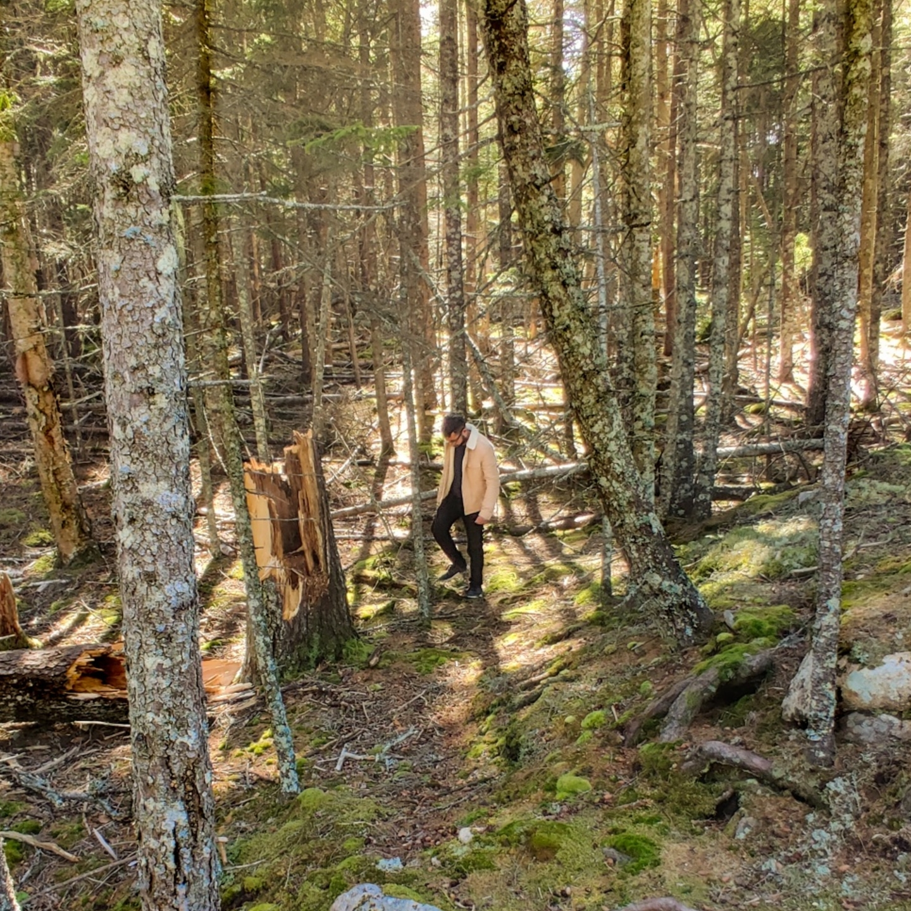
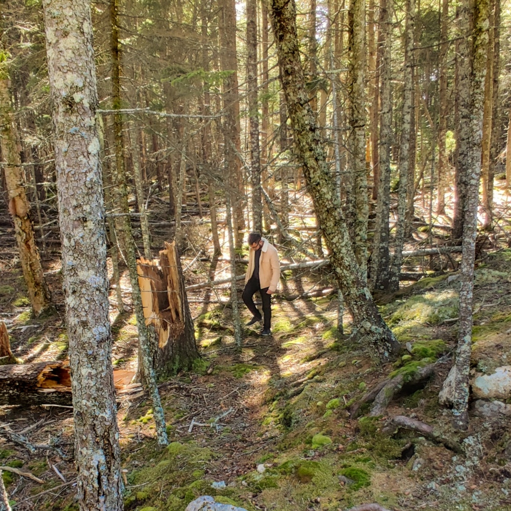

Hobbies and Interests
Over the years, I have engaged in many different activities, whether it be with friends or solo. However, some of my favorite things to do are the following:
- Photography
- Traveling
- Driving
Photography has been something I was really interested in learning after seeing so many cool photos online especially after Instagram became popular. I recently purchased a DSLR camera and am always looking for an opportunity to take it out and shoot. My next big purchase will be a video drone that I can take on my next travel destination.
Traveling has been a big part of my goals recently, after I realized time isn't waiting for anyone. Every year I plan to travel to at least one international destination with family and friends. A life goal of mine is to travel to every country across the globe at least once.
Driving is incredibly fun to me, in contrast to a lot of you I'm sure. I see driving as a way to de-stress and let my mind go where it wants. I also just enjoy the aspect of controlling a vehicle to transport me somewhere. This definitely must have influenced my mechanical background.
Below are some of my travel photos and video:
 
